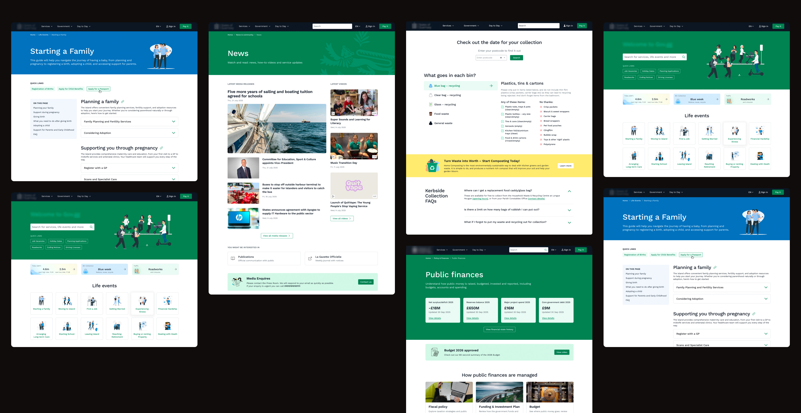
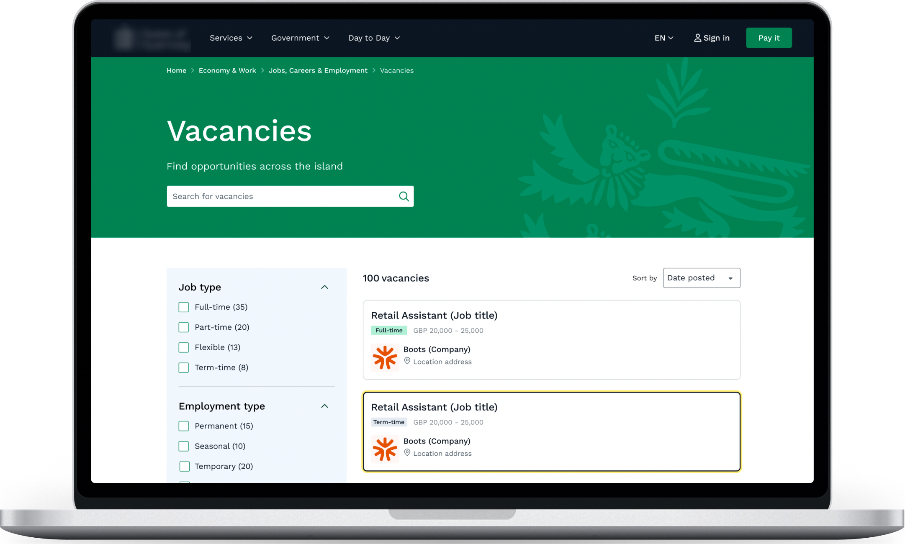
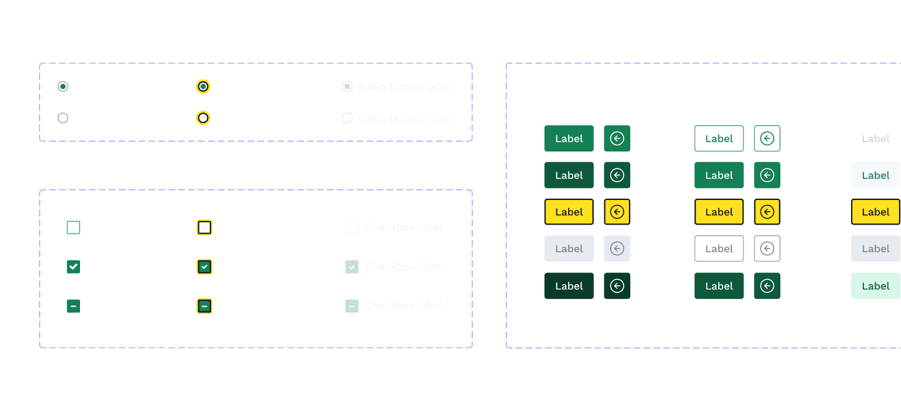

Redesign for Public Services
GovTech · Full Redesign with Constraints
* Client names and some visuals are anonymized under NDA.
Project goals
The project goal was redesigning the public web platform (for the island in the image above) in line with brand guidelines within ServiceNow constraints. Another huge task was creating sign-up flows and the after-login experience from scratch.
The platform enables users to explore public services, read articles and news, and access their accounts to complete government-related actions.
My role
- Led UX/UI design for a large-scale public services platform, covering both public and authenticated user experiences
- Designed end-to-end user flows within ServiceNow technical constraints
- Established and maintained a scalable Design System aligned with accessibility (WCAG 2.2 AA) standards
- Collaborated with cross-functional stakeholders to align product, business, and technical requirements
- Acted as a key driver of accessibility standards across the product
- Conducted Visual QA to ensure the design was implemented properly

Design process steps
To ensure our design is data-driven: we analyzed and used Research report made by 3rd party, also validated the design concept.
- Analyzing existing Researches and Artifacts
- Direct Competitors analysis and Information Architecture
- Creating Style Guide based on Client’s Brand guide
- Design concept creation for 2 key pages
- User validation: testing with real citizens (future users)
- Iteration after testing and work on other design flows
- Work on Design Library, customization of ServiceNow components
- Collaboration with Multiple stakeholders for different flows, iteration after feedback
- Continuous development, cross-functional collaboration and Visual QA
Accessibility
Accessibility is one of my focus areas, and I consistently ensure that my designs comply with WCAG standards.
For this project — following WCAG 2.2 standards is key requirement, therefore I designed with ensuring the design pass color contrast, have focus states, and touch target sizes etc.
This helps ensure consistency, reduce risks during development, and deliver inclusive, high-quality user experiences.

Design system
On this project I have created and maintained Design system in Figma, including style guide, components, variables, tokens, and clear guidelines.
I ensured alignment between design and development, contributed to system evolution based on product needs. I also consider accessibility, responsiveness, and reusability when defining components.
- Created Style Guide based on Client Brand guide to build foundation for DS
- Created and maintain scalable Design System libraries in Figma (with components, variants, tokens)
- Ensure components meet accessibility (WCAG) standards and support responsive behavior across breakpoints

Result
- Delivered a full redesign of the platform, improving usability, accessibility, and consistency across all user journeys
- A Design System that improved development efficiency and ensured UI consistency
- All design is compliant with WCAG 2.2 AA accessibility standards
- Simplified complex government workflows, improving clarity and user guidance